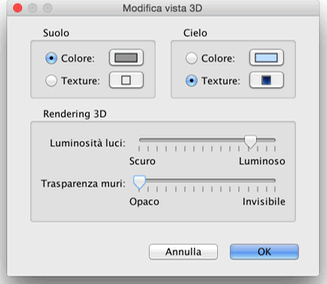

| Modificare la vista 3D | |||
|
Scegli Vista 3D > Vista aerea o Vista 3D > Visita virtuale per cambiare tra i due punti di vista proposti nella vista 3D.
Quando Vista aerea è selezionata la vista 3D
mostra la tua casa in 3 dimensioni vista dall'alto. In questo
modo, il movimento del mouse verso sinistra o verso destra con il
pulsante sinistro premuto fa girare la casa attorno ad un asse
verticale posizionato nel centro della casa; il movimento del mouse
avanti o indietro con il pulsante sinistro premuto fa girare la
casa attorno ad un asse orizzontale; la rotellina del mouse
ingrandisce o rimpicciolisce la vista 3D. Quando la Visita virtuale è selezionata, un visitatore virtuale visto dall'alto è inoltre disegnato nella piantina della casa. La sua posizione e il suo angolo sono aggiornati contemporaneamente nella piantina e nella vista 3Dad ogni movimento del visitatore. Questo visitatore virtuale è contornato da 4 indicatori.
|


|
|
Quando il puntatore del mouse è posizionato sopra una spalla del
visitatore, cambia per indicare che puoi trascinare questo punto
per girare la testa o ruotare il corpo del visitatore. Mentre
premi il pulsante del mouse, un suggerimento ti mostrerà il
valore dell'angolo modificato. Altri attributi della vista 3D possono essere modificati scegliendo Vista 3D > Modifica....  Nel pannello relativo alla vista 3D, puoi cambiare il campo di
visuale del visitatore virtuale, la sua altezza, il colore o il
rivestimento del terreno e del cielo, l'intensità della luce e
la trasparenza dei muri. |
|